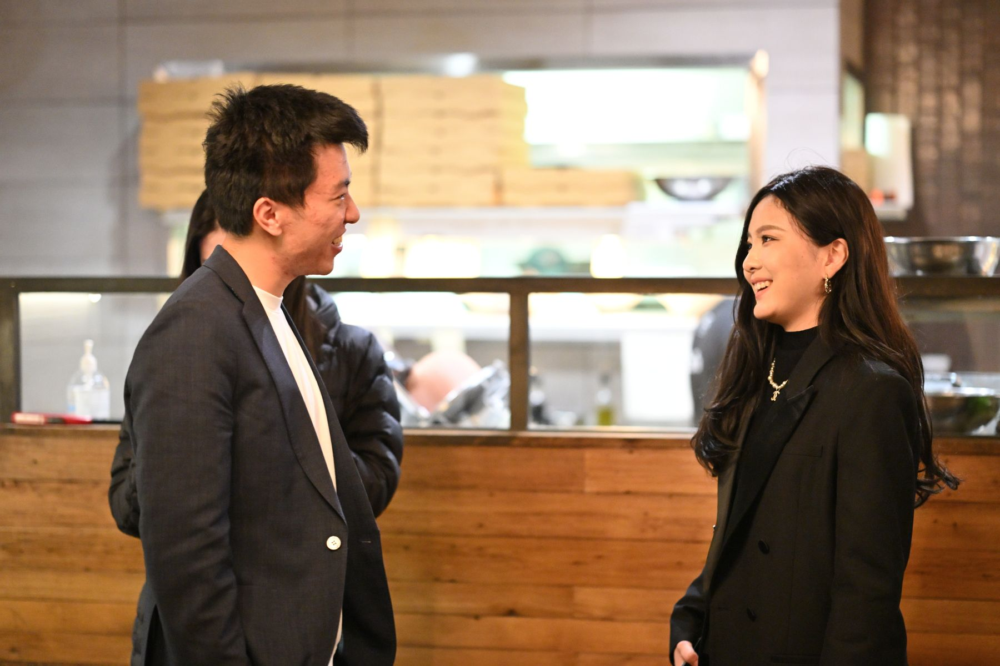
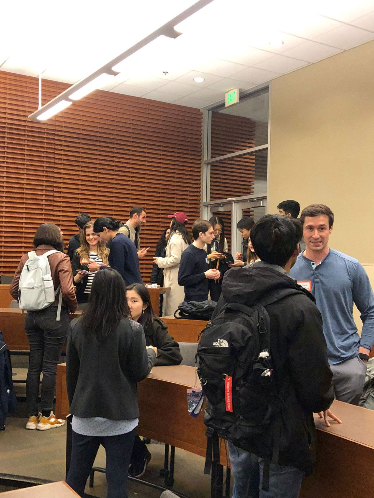
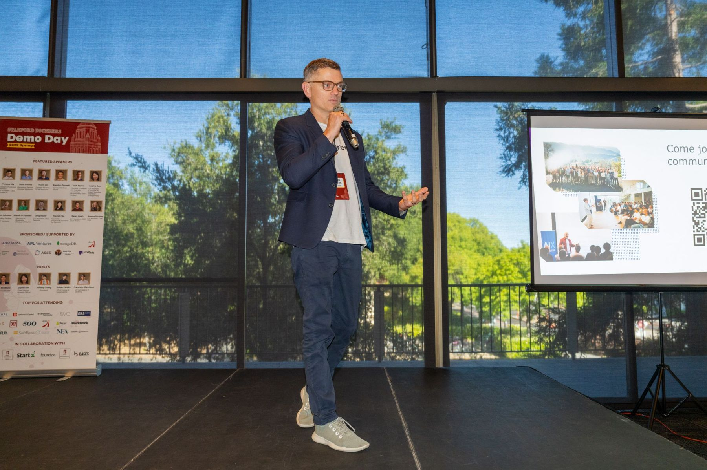
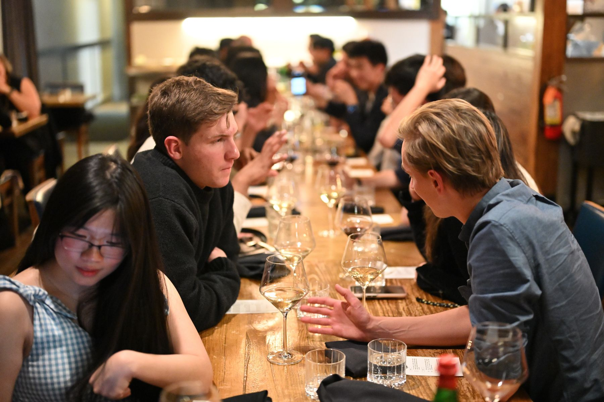

Welcome to Stanford Founders’ Club
Join our casual community of 1,150+ graduate founders pushing and supporting each other.




- Graduate founders
- 1,150+
- Startups pitched
- 150+
- Investors at Demo Day
- 300+
- Demo Day attendees
- 1,500+
History
It started as a WhatsApp group of ten friends trading events, resources and opportunities across Stanford’s graduate schools. Finding a co-founder, or a resource run by another school, was harder than it should have been, so we set out to bridge that gap.
The chat grew from 10 to over 1,200 members, then became an official student organization running programs and events for graduate students.
Mission & Values
Where we fit
Stanford already has StartX, GSB E-Club, BASES, ASES, STVP and more. We help earlier: when graduate students move from research to a startup and need a new community.
Explore Stanford’s resourcesValues
Diversity, collaboration and integrity, in a community where founders push and support each other.
Community
Graduate founders from every school, connected with resources, investors and like-minded co-founders.